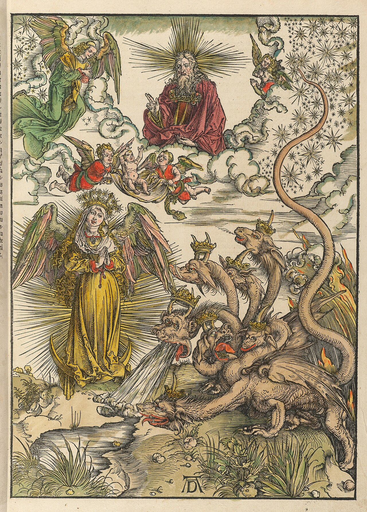

Es probablemente la escena más conocida de la Biblia, y también una de las peor leídas. Una serpiente habla con una mujer, la mujer come, el hombre come, y todo se estropea. Casi cualquier persona a la que se le pregunte quién era esa serpiente responderá lo mismo: el diablo, disfrazado.
El Génesis no dice eso. Y lo notable no es que no lo diga, sino cuánto tarda alguien en decirlo.
Un animal, castigado como animal
Génesis 3:1 la llama hannaḥaš, «la serpiente», la califica de ʿārûm —astuta, sagaz— y aclara expresamente que es uno de los animales del campo que YHWH había hecho. No es un ser sobrenatural infiltrado en la creación: es una criatura de esa misma creación, la más lista de todas.
Y el castigo lo confirma, porque es zoológico. En 3:14-15 la sentencia consiste en reptar sobre el vientre, comer polvo y quedar en hostilidad perpetua con la descendencia de la mujer. Es una etiología: el relato explica por qué las serpientes se arrastran y por qué nos dan miedo. Un castigo dirigido a un ángel caído no tendría ese contenido. A un ángel no se le condena a reptar.
La formulación de la especialista Shawna Dolansky es la más limpia: la serpiente es simplemente el más astuto de los animales, sin ninguna mención del diablo, porque la noción de Satán como enemigo cósmico todavía no existía cuando el Génesis se escribió. No es que el autor la omitiera. Es que no la tenía.

Y ningún otro texto vuelve sobre ella
Aquí está el dato que suele sorprender más. Podría pensarse que la identificación aparece más adelante en el Antiguo Testamento, en algún profeta o en algún salmo. No aparece. Ningún texto del Antiguo Testamento identifica a la serpiente del Edén con un ser demoníaco. Ni una vez.
Y cuando por fin aparece un ha-satán en Job y en Zacarías, resulta que no sirve: es un acusador con función judicial, miembro de la corte celeste, que trabaja al servicio de Dios. No está caído, no es el enemigo, y nadie lo relaciona con el jardín. Ese arco —de fiscal a enemigo— está contado en El nacimiento de Satán, y es el punto donde empieza esta serie.
Así que la pregunta correcta no es «¿dice el Génesis que la serpiente es Satán?», que se responde en una línea. La pregunta interesante es: si no lo dice el Génesis ni lo dice nadie después durante siglos, ¿quién lo dice primero?
¿Quién dice que la serpiente es Satán?
Los textos, en orden cronológico, con una sola pregunta hecha a cada uno. Lo que hay que mirar no son las respuestas afirmativas: es cuántas filas hacen falta para llegar a la primera.
Entre el primer texto de la lista y el primero que responde sí sin ambigüedad hay, como mínimo, siete siglos.
Los eslabones, uno por uno
Hay tres textos que se citan siempre como el puente, y los tres merecen mirarse de cerca, porque ninguno hace lo que se le atribuye.
Sabiduría 2:24 dice que «por la envidia del diábolos entró la muerte en el mundo». Se cita como la referencia más antigua a la serpiente como diablo, y podría serlo. El problema es que el texto no menciona la serpiente, y que hay una discusión abierta y seria sobre quién es ese diábolos: el contexto inmediato del libro habla del fratricida, de modo que hay quien sostiene que se refiere a Caín, en el sentido genérico de «adversario» o «calumniador». Es una insinuación disputada, no una identificación.
Romanos 16:20 dice que «el Dios de la paz aplastará a Satanás bajo vuestros pies», y el verbo evoca el lenguaje de la versión griega de Génesis 3:15. Es un eco verbal real. Pero Pablo no dice que la serpiente sea Satanás: usa una imagen que su lector reconoce. Y hay un dato en contra que no conviene esconder: en Romanos 5:18 y en 1 Corintios 15:21-22, cuando Pablo explica de dónde viene el mal, pone la culpa en los humanos.
Apocalipsis 12:9 es el más fuerte de los tres, y sí hace algo grande: fusiona en una sola figura el dragón, «la serpiente antigua», el Diablo y Satanás. Cuatro cosas que hasta entonces eran cuatro. Pero el marco del capítulo importa: es el mito de combate contra el dragón del caos —el Leviatán de Isaías 27, el Rahab de los salmos, la Tiamat mesopotámica—, no el jardín. La «serpiente antigua» puede apuntar al Edén, y probablemente el autor tenía las dos cosas en la cabeza; pero lo que el texto pone delante es la serpiente primordial del caos, no el animal que habla con Eva.
El texto donde sí está todo
Hay un escrito que contiene el mito completo, y no está en la Biblia. En la Vida de Adán y Eva, Satán explica por qué cayó: Dios le ordenó postrarse ante Adán, hecho a su imagen, y él y sus seguidores se negaron; fueron expulsados del cielo, despojados de su gloria, y empezaron a envidiar a los hombres. En la versión griega, Satán habla a través de la serpiente, usándola como instrumento.
Soberbia, rebelión, expulsión, envidia y tentación. Todo el argumento, en orden. Es el eslabón decisivo —y es también donde está la trampa, porque su fecha no se puede fijar.
Es tentador usar este texto para adelantar la fecha de la identificación, porque contiene el mito entero. Pero su datación está tan discutida que no permite fijar prioridades. Las versiones conservadas se componen entre los siglos III y V d.C.; se debate si detrás hay un original judío del siglo I o si es una composición cristiana en griego. Y ahí está el círculo: quien la data temprano la convierte en la fuente de la lectura patrística, y quien la data tarde la convierte en su resultado. El texto no puede ser a la vez la prueba y lo probado. Conviene además saber que el motivo de la negativa a adorar a Adán tiene recepción en el Corán, con Iblīs, y en la literatura siríaca, y que la dirección de esa dependencia también está en discusión.
El primero que lo dice, y cómo lo dice
La primera identificación explícita, argumentada y consciente que se puede documentar tiene nombre, obra y fecha aproximada: Justino Mártir, Diálogo con Trifón 103,5, hacia 155-165 d.C.
Y su manera de argumentarlo es reveladora. Justino descompone el nombre Satanás en dos piezas y sostiene que la primera significa «apóstata» y la segunda «serpiente», y de ahí concluye que Moisés, cuando escribió «serpiente», estaba nombrando al mismo que Job y Zacarías llaman diablo. La etimología es lingüísticamente falsa: el nombre no se descompone así.
Decirlo no debilita el testimonio, lo sitúa. Justino no está repitiendo algo que todo el mundo diera por sabido: está construyendo la identificación, y necesita un argumento para hacerlo. Eso es exactamente lo que uno espera encontrar en el momento en que una idea se está formando y todavía no es obvia. Cuando una idea ya es obvia, nadie la razona.
Después, la lectura se consolida con la patrística latina y sobre todo con Agustín, que la integra en la doctrina del pecado original. A partir de ahí deja de ser un argumento y se convierte en el punto de partida: llega a la Edad Media como si hubiera estado siempre en el texto. Y mil quinientos años más tarde, Milton la ejecutará narrativamente, metiendo a Satán dentro de la serpiente y convirtiéndolo después en serpiente él mismo.

Un animal del campo, astuto, castigado a reptar y comer polvo. Ninguna mención de un ser demoníaco, en este pasaje ni en ningún otro del Antiguo Testamento.
Una insinuación cuyo referente se discute —puede ser Caín— y una alusión verbal que no identifica nada. Ninguno de los dos sirve como prueba, y usarlos como tal es sobreinterpretar.
Funde dragón, serpiente antigua, Diablo y Satanás. Pero lo hace dentro del mito de combate contra el dragón del caos, no dentro del relato del jardín.
Explícita, argumentada y apoyada en una etimología falsa. Es el primer testimonio documentable, y el hecho de que necesite argumentarla indica que aún no era evidente.
Siete siglos
Eso es lo que separa el relato del jardín de su primera lectura satánica documentable. Y en ese hueco no hay silencio por casualidad: hay textos, muchos, que hablan de la serpiente, del pecado, de la muerte y del adversario, y que no hacen la conexión porque todavía no había razón para hacerla. La pregunta «¿de dónde viene el mal?» no se plantea con esa forma hasta el Segundo Templo tardío, y cuando se plantea, el jardín es un lugar disponible donde ir a buscar la respuesta.
Que la identificación sea tardía no la hace ilegítima como lectura religiosa; las tradiciones releen sus textos, y en eso consisten. Lo que sí hace es dejar de ser un dato del Génesis para convertirse en un dato de la historia del cristianismo, con su fecha y su primer autor conocido.
En la entrega siguiente el escenario cambia por completo. Del jardín pasamos a Galilea, donde el adversario ya tiene varios nombres, los demonios son una presencia cotidiana y hay un exorcista del que la historia sí puede decir algo.
Pieza interactiva de la serieEl linaje de una idea
En el grafo, la línea que va de Génesis 3 a «la serpiente del Edén es Satán» está tachada; la que va de Sabiduría a Justino es discontinua, y la que va de Justino a Agustín es continua. Las tres se explican en esta entrega.
Abrir el grafo →Es dato firme que Génesis 3 llama a la serpiente hannaḥaš, la califica de ʿārûm y la incluye entre los animales del campo, y que el castigo de 3:14-15 es zoológico. Lo es que ningún texto del Antiguo Testamento identifica esa serpiente con un ser demoníaco. Lo es que el ha-satán de Job 1-2 y Zacarías 3 es un acusador de la corte celeste al servicio de Dios. Lo es el contenido de Apocalipsis 12:9 y su fusión de cuatro figuras, así como el hecho de que el capítulo opera en el marco del mito de combate. Y lo es el testimonio de Justino Mártir, Diálogo con Trifón 103,5, hacia 155-165 d.C., con su etimología —lingüísticamente falsa— del nombre Satanás. La consolidación con Agustín, en De Genesi ad litteram y De civitate Dei, también es firme.
Debate abierto: el referente del diábolos de Sabiduría 2:24, que puede ser la serpiente, Caín o una figura satánica genérica. El valor probatorio de Romanos 16:20, que aquí se considera una alusión verbal y no una identificación. Si la «serpiente antigua» de Apocalipsis 12:9 apunta al Edén, al dragón caótico o a ambos. Y sobre todo la fecha de la Vida de Adán y Eva, discutida entre el siglo I y el V, que impide usarla para fijar prioridades. Las citas de Ireneo sobre la serpiente como ángel apóstata (Adversus Haereses IV,40,3 y V,21,2) no se han verificado en el original y no se les da peso.
Que una lectura sea posterior al texto no la convierte en un engaño. Todas las tradiciones religiosas releen sus escritos a la luz de preguntas que sus autores no se hacían, y ésa es una de las cosas que mantiene vivos los textos. Lo que este artículo hace es distinguir dos cosas que suelen ir pegadas: lo que el Génesis dice, y lo que quinientos años de lectura le fueron añadiendo. Separarlas no obliga a nadie a renunciar a nada.